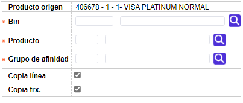

Definición de productos - Copia productos
Esta opción que se invoca desde el formulario Definición de productos le permite a la entidad copiar y replicar todos los parámetros de un producto ya existente a un nuevo producto, agilizando así el proceso de creación de nuevos productos.
Después que el produto ha sido copiado, el usuario puede modificar los datos y parámetros que sea necesario de acuerdo con las características del nuevo producto.
Una vez que el usuario selecciona un registro desde Definición de productos e invoca el hipervínculo copia productos, se despliega un nuevo formulario con los siguientes campos.

Descripción de campos
|
Producto origen |
Campo de salida en el cual se muestra el bin, producto, grupo de afinidad y descripción del producto origen que se quiere copiar. |
|
Bin |
Este campo obligatorio contiene lista de valores de la que se selecciona el bin que conforma el nuevo producto al que se desea replicar la parametrización del producto origen. |
|
Producto |
Campo obligatorio con lista de valores de la que se selecciona el producto (segmento) que conforma el nuevo producto al que se desea replicar la parametrización del producto origen. |
|
Grupo de afinidad |
Este campo obligatorio contiene lista de valores de la que se selecciona el grupo de afinidad que conjuntamente con el bin y el producto seleccionados en los campos anteriores conforma el nuevo producto al que se desea replicar la parametrización del producto origen. |